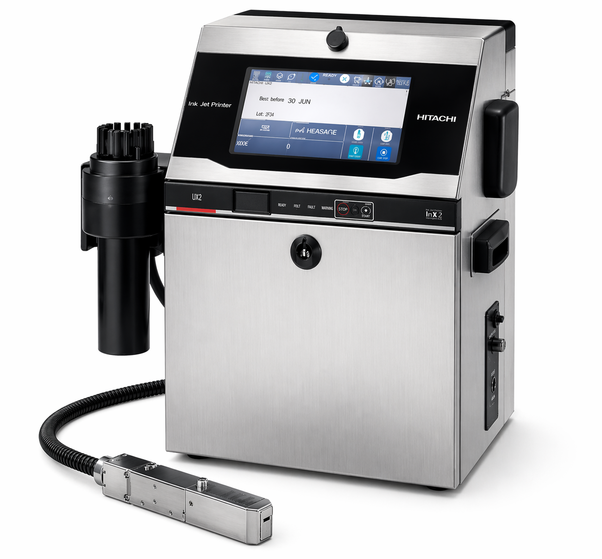

Superfície curva e brilhante
PET é cilíndrico e altamente reflexivo. Sistemas a laser erram a leitura de retorno e câmeras de inspeção têm dificuldade de validar.
CIJ com cabeçote ajustável e sensor de presença que dispara na curva certa.
Refrigerantes, águas, isotônicos, óleos, lubrificantes e cosméticos são envasados majoritariamente em PET — cada um traz um desafio diferente. Veja a tecnologia, a tinta e o modelo Hitachi que resolvem o seu caso.
O PET (polietileno tereftalato) parece simples, mas para uma codificadora industrial é um dos mais exigentes. Veja por quê — e como a Hitachi resolve cada um dos quatro problemas.
PET é cilíndrico e altamente reflexivo. Sistemas a laser erram a leitura de retorno e câmeras de inspeção têm dificuldade de validar.
CIJ com cabeçote ajustável e sensor de presença que dispara na curva certa.
Garrafas PET saídas de câmara fria recebem condensação que faz a tinta escorrer antes de secar.
Tinta MEK secagem rápida (sub-segundo) que penetra a condensação e fixa.
Linhas modernas envasam 30.000 a 90.000 PETs/h. TIJ e laser de baixa potência não acompanham.
UX2-D160W com até 3.173 c/s — cobre o envase mais rápido do mercado.
A linha é lavada todos os turnos com hidro alta-pressão e detergente alcalino. Eletrônica não-IP65 cozinha.
Toda CIJ Hitachi vem IP65 de fábrica — jato d'água direto e poeira.
Não existe "PET genérico" para uma codificadora industrial. Cada família reage diferente — cada uma exige calibragem específica do cabeçote, da viscosidade e da fonte.
Águas, refrigerantes claros
Refrigerantes, sucos, isotônicos
Óleos, lubrificantes, ácidos
Cremes, shampoos, perfumes
Bandejas, blisters cosméticos
Em uma única impressão por garrafa, a Hitachi codifica todos os dados de rastreabilidade que a regulação brasileira exige — configurável por SKU, com troca de mensagem em um toque.

Entre CIJ, TIJ e TTO, a CIJ é a única que reúne velocidade extrema, fixação em substrato não-poroso, resistência a condensação e operação contínua em ambiente IP65.
| Tecnologia | Velocidade em PET | Aderência | Recomendado? |
|---|---|---|---|
| CIJ Hitachi | Até 72.000 unid/h | Excelente (MEK) | Sim — padrão de mercado |
| TIJ | Até 25.000 unid/h | Boa, mas marca borra | Apenas linhas lentas |
| TTO | Não aplicável | Não fixa em PET curvo | Não recomendado |
| Laser | Até 40.000 unid/h | Marca permanente | Casos especiais (consumo alto) |

Padrão usado por AmBev, Coca-Cola, Heineken e cervejarias premium do Brasil.
Linhas até 30.000 PETs/h: UX-D150W. PET fosco/químico: UX-D150W com tinta resistente.
Antes de fechar a compra, a Suljett oferece teste sem custo no seu próprio PET — na sua marca, com a sua identidade visual e na velocidade da sua linha. Você recebe a garrafa codificada, fotografa, mostra para a Qualidade e só fecha quando o resultado convencer.

Um engenheiro Suljett vai até a sua linha, mede a velocidade real do envase, avalia o tipo de PET e indica a Hitachi correta — com teste in-loco no laboratório, se necessário.
Respondemos em até 4h úteis · Sul e Nordeste do Brasil